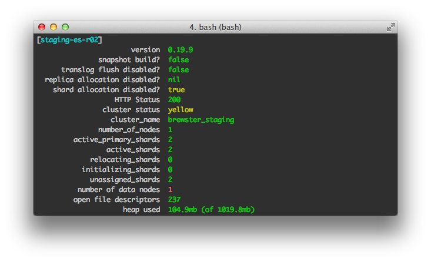

# Brewster Engineering #

## Test-driven Ops at Brewster ##
# Brewster #
Your personalized address book

Connects everyone you know, however you know them

Builds merged profiles for all your contacts

Who's trending in your life, or losing touch

Powerful search

Brewster Overview
- Download & store raw profiles (Riak)
- Store connection data (Cassandra)
- Analyze profiles to build contact documents for search (Elasticsearch)
- API serves data to client
- iOS app
- Periodic account sync for updates
# Front-end Loader #
### How much can you take? ###
 # Tools #
* The wikipedia page lists 23 tools
* Many of which cost money
* And/or are monolithic testing tools
* None of which have a simple Ruby API
## JMeter ##
* Is great for static analysis but becomes more cumbersome when doing dynamic scripting.
# Tools #
* The wikipedia page lists 23 tools
* Many of which cost money
* And/or are monolithic testing tools
* None of which have a simple Ruby API
## JMeter ##
* Is great for static analysis but becomes more cumbersome when doing dynamic scripting.
 # Front End Loader #
### Ruby library for declaring load tests and viewing their results ###
# Front End Loader #
### Ruby library for declaring load tests and viewing their results ###
gem install front\_end\_loader
Declaring the experiment
require 'front_end_loader'
experiment = FrontEndLoader::Experiment.new.tap do |e|
e.user_count = 20
e.loop_count = 5
e.domain = 'https://www.google.com'
e.basic_auth('unreal_login', 'unreal_password')
e.default_parameters = { 'unnecessary' => 'true' }
e.debug = '/tmp/front_end_loader.txt'
e.requests do |r|
...
end
end
experiment.run
Scripting the requests
e.requests do |r|
r.get('privacy_policy', '/intl/en/policies')
word = r.get('test_srch', '/search', :q => 'test') do |response|
response.body.
split(/\s/).
reject { |i| i.length < 3 || i.length > 10 }.
sample
end
e.write_debug(word)
r.get('random_word_search', '/search', :q => word)
# also e.g. r.post(...), r.put(...), r.delete(...)
end
# Next Steps #
* Other display types
* Distribution
* Storing output and comparing data across runs
* Charts and graphs
# Auger #
### Test-driven ops ###
# Why Auger? #
* Ops should test their stuff
* Writing tests should be quick and easy
* Test at the service level
# What is Auger? #
* Ruby DSL for testing remote applications
* Command-line client for running tests
* Plugin framework for wrapping gems
* Leverage existing gems as plugins
# What questions can Auger answer? #
* is port 80 open on all my webservers?
* does /index.html contain a particular tag?
* is redis running?
* is it configured as a master? a slave?
* is elasticsearch responding on all my hosts?
* what's the cluster state?
* do I have the correct number of data nodes?
# Installation #
gem install auger
# A Test #
project "Ganglia Web Servers" do
server "ganglia-r[01-03]"
http do
get '/ganglia/' do
test 'status code is 200' do |response|
response.code == '200'
end
test 'gmetad Version' do |response|
response.body.match /version\s+([\d\.]+)/
end
end
end
end
# The Output #
 # More interesting #
# More interesting #
require 'json'
project "Elasticsearch - Staging" do
server "staging-es-r[01-02]"
http 9200 do
timeout 3
get "/" do
before_tests do |response|
JSON.parse(response.body)
end
test "version" do |json|
status = json["version"]["number"]
end
...
# More interesting output #

# Plugin: Redis #
require 'redis'
module Auger
class Project
def redis(port = 6379, &block)
@connections << Auger::Redis.load(port, &block)
end
end
end
# Plugin: Connection #
module Auger
class Redis < Auger::Connection
def open(host, options)
::Redis.new options.merge({
:host => host,
:port => options[:port],
})
end
def close(redis)
redis.quit
end
def info(&block)
@requests << Auger::RedisInfo.load(nil, &block)
end
end
end
# Plugin: Request #
module Auger
class Redis < Auger::Connection
class RedisInfo < Auger::Request
def run(redis, arg)
redis.info
end
end
end
end
# Plugin: Usage #
project "Redis" do
server "staging-redis-r01"
redis 6379 do
info do
test "redis version" do |info|
info['redis_version']
end
test "server role" do |info|
info['role']
end
end
end
end
# Plugin: Output #
 # How do we use Auger? #
* Test-driven deployment
* Debugging
* Triage
# Q&A #
Contact: ric@brewster.com
# How do we use Auger? #
* Test-driven deployment
* Debugging
* Triage
# Q&A #
Contact: ric@brewster.com